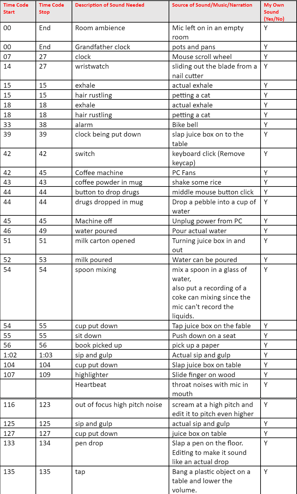

FOLEY VIDEO
The Foley Process
Foley is a process in filmmaking used in many modern films where the Foley artist reproduces everyday sound effects which aren't picked up well by a mic and adds them to videos to enhance audio quality. This process was the basis of my project where I had to recreate each sound she made in the video. I used a variety of ways to make each sound, as seen in the image below.

What did you learn about foley artists/ editing or about yourself during this assignment?
I learned how hard it is to replicate sounds, especially human sounds such as sipping and breathing. While some audio sounds are relatively easy to replicate, like putting down an object, some sounds can be very hard so you need to get creative.
I learned how it’s important to use a wide range of materials and objects. Sounds can be made just by using a few objects. For example, for the grandfather clock, I needed to use an object made out of metal because plastic would make it sound like a toy and wood wouldn’t give a proper sound.
Another thing I learned is how mixing and editing audio is also very important when adding foley sounds to an audio/video file. I first tried simply placing the audio clips in the video, but it sounded very bad so I had to change volumes, add reverbs, change pitches, and more to make it sound just the way I wanted it to.
What aspects of your foley assignment were you proud of?
I like how I was able to make the audio surround sound so that sounds in the background sound like they’re in the background, audio in the top left sounds like they’re in the top left.
There are some sounds which I recreated which I feel like sound exactly the same. For example the wristwatch and small clock sounded really good.
There are also sounds which I recreated in a creative way which I'm proud of. The Coffee machine engine was recreated by me running my pc at max power and recording the fans. I also had the audio of me screaming pitched higher to sound like a headache.
The heartbeat was also a sound effect which I did pretty well, it sounded like she was in panic which was my intention.
If you could re-do your foley assignment what would you do or improve?
One audio I wasn’t satisfied with was the alarm. I think I should’ve tried to speed up the bell so it sounds like an actual alarm. I also wish I found a way to make a foley sound for sipping, pouring water, and breathing. It would’ve felt a lot better if every sound was made from foley. I also think I should’ve synced the grandfather clock ticks so it doesn’t sound awkward when the scene changes. I also would have added smaller sounds if I had more time such as putting fingers on an object and picking it up, or the character moving around, and every small breath throughout the video.
If I wanted to do this more professionally I would also try mastering the audio. This is a process where you make the audio sound good on a variety of different devices. Because I noticed that some sounds sound different depending on the speaker. For example the breathing sounds low pitched while on other speakers it's high pitched.